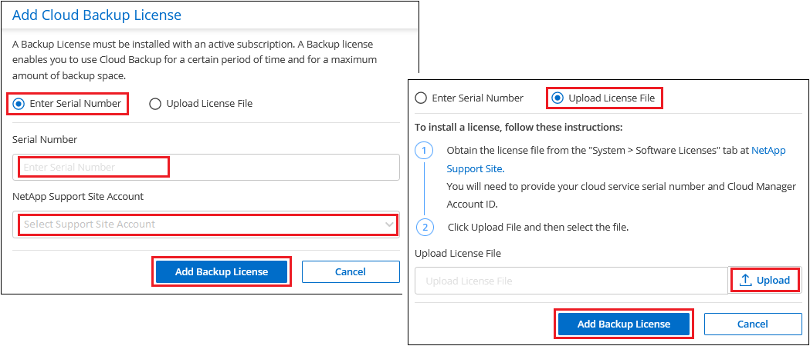

Amazon Web Services
Amazon Web Services
 Google Cloud
Google Cloud
 Microsoft Azure
Microsoft Azure
 Richiedi modifiche alla documentazione
Richiedi modifiche alla documentazione Modifica questa pagina
Modifica questa pagina Scopri come collaborare
Scopri come collaborareImpostare le licenze per il backup e ripristino BlueXP
Collaboratori
Puoi concedere in licenza il backup e il ripristino BlueXP acquistando un abbonamento al mercato annuale o pay-as-you-go (PAYGO) dal tuo cloud provider oppure acquistando una licenza Bring-Your-Own (BYOL) da NetApp. È necessaria una licenza valida per attivare il backup e ripristino BlueXP in un ambiente di lavoro, per creare backup dei dati di produzione e per ripristinare i dati di backup in un sistema di produzione.
Alcune note prima di leggere ulteriori informazioni:
-
Se hai già sottoscritto l’abbonamento pay-as-you-go (PAYGO) nel mercato del tuo cloud provider per un sistema Cloud Volumes ONTAP, sarai automaticamente iscritto anche al backup e ripristino BlueXP. Non dovrai più iscriverti.
-
La licenza BYOL (Bring-Your-Own-License) di backup e ripristino BlueXP è una licenza mobile che è possibile utilizzare in tutti i sistemi associati all’account BlueXP. Quindi, se si dispone di una capacità di backup sufficiente da una licenza BYOL esistente, non sarà necessario acquistare un’altra licenza BYOL.
-
Se si utilizza una licenza BYOL, si consiglia di sottoscrivere anche un abbonamento PAYGO. Se si esegue il backup di più dati di quelli consentiti dalla licenza BYOL, il backup prosegue con l’abbonamento pay-as-you-go, senza interruzioni del servizio.
-
Quando si esegue il backup dei dati ONTAP on-premise su StorageGRID, è necessaria una licenza BYOL, ma lo spazio di storage del cloud provider non costa.
30 giorni di prova gratuita
Una versione di prova gratuita di 30 giorni per il backup e ripristino BlueXP è disponibile tramite l’abbonamento pay-as-you-go nel mercato del tuo cloud provider. La versione di prova gratuita inizia dal momento in cui ti iscrivi al marketplace listing. Si noti che se si paga l’abbonamento Marketplace quando si implementa un sistema Cloud Volumes ONTAP e si avvia la versione di prova gratuita di backup e ripristino BlueXP 10 giorni dopo, si avranno a disposizione 20 giorni per utilizzare la versione di prova gratuita.
Al termine della prova gratuita, potrai passare automaticamente all’abbonamento PAYGO senza interruzioni. Se decidi di non continuare a utilizzare il backup e il ripristino BlueXP, basta "Annullare la registrazione del backup e ripristino BlueXP dall’ambiente di lavoro" prima della fine della prova, non ti verrà addebitato alcun costo.
Utilizza un abbonamento A PAYGO per il backup e ripristino BlueXP
Per il pay-as-you-go, pagherai il tuo cloud provider per i costi dello storage a oggetti e per le licenze di backup NetApp su base oraria in un singolo abbonamento. È necessario iscriversi anche se si dispone di una versione di prova gratuita o se si porta la propria licenza (BYOL):
-
L’iscrizione garantisce che il servizio non subisca interruzioni al termine della prova gratuita. Al termine della prova, ti verrà addebitato ogni ora in base alla quantità di dati di cui hai effettuato il backup.
-
Se si esegue il backup di un numero di dati superiore a quello consentito dalla licenza BYOL, il backup dei dati prosegue con l’abbonamento pay-as-you-go. Ad esempio, se si dispone di una licenza 10 TIB BYOL, tutta la capacità oltre la 10 TIB viene addebitata tramite l’abbonamento PAYGO.
Non ti verrà addebitato alcun costo dal tuo abbonamento pay-as-you-go durante la prova gratuita o se non hai superato la licenza BYOL.
Esistono alcuni piani PAYGO per il backup e il ripristino BlueXP:
-
Un pacchetto di "backup cloud" che consente di eseguire il backup dei dati Cloud Volumes ONTAP e dei dati ONTAP on-premise.
-
Un pacchetto "CVO Professional" che consente di unire backup e ripristino di Cloud Volumes ONTAP e BlueXP. Sono inclusi backup illimitati per il sistema Cloud Volumes ONTAP che utilizza la licenza (la capacità di backup non viene conteggiata rispetto alla capacità concessa in licenza). Questa opzione non consente di eseguire il backup dei dati ONTAP on-premise.
-
Un pacchetto "CVO Edge cache" ha le stesse funzionalità del pacchetto "CVO Professional", ma include anche il supporto per "Caching edge BlueXP" servizio. Hai diritto a implementare un sistema edge caching BlueXP per ogni 3 TIB di capacità fornita sul sistema Cloud Volumes ONTAP. Questa opzione è disponibile nei mercati Azure e Google e non consente di eseguire il backup dei dati ONTAP on-premise.
Utilizza questi link per iscriverti al backup e ripristino BlueXP dal tuo mercato di cloud provider:
Utilizzare un contratto annuale
Pagare il backup e il ripristino BlueXP ogni anno acquistando un contratto annuale.
Quando si utilizza GCP, contattare il rappresentante commerciale NetApp per acquistare un contratto annuale. Il contratto è disponibile come offerta privata in Google Cloud Marketplace. Una volta che NetApp condivide l’offerta privata con te, puoi selezionare il piano annuale quando ti iscrivi da Google Cloud Marketplace durante l’attivazione del backup e ripristino BlueXP.
Utilizzare una licenza BYOL di backup e ripristino BlueXP
Le licenze Bring-Your-Own di NetApp offrono termini di 1, 2 o 3 anni. Si paga solo per i dati protetti, calcolati in base alla capacità logica utilizzata (prima eventuali efficienze) dei volumi ONTAP di origine di cui viene eseguito il backup. Questa capacità è nota anche come terabyte front-end (FETB).
La licenza di backup e ripristino BYOL BlueXP è una licenza mobile in cui la capacità totale è condivisa tra tutti i sistemi associati all’account BlueXP. Per i sistemi ONTAP, è possibile ottenere una stima approssimativa della capacità necessaria eseguendo il comando CLI volume show -fields logical-used-by-afs per i volumi di cui si intende eseguire il backup.
Se non si dispone di una licenza BYOL di backup e ripristino BlueXP, fare clic sull’icona della chat nell’angolo inferiore destro di BlueXP per acquistarne una.
Se si dispone di una licenza basata su nodo non assegnata per Cloud Volumes ONTAP che non si intende utilizzare, è possibile convertirla in una licenza di backup e ripristino BlueXP con la stessa equivalenza in dollari e la stessa data di scadenza. "Fai clic qui per ulteriori informazioni".
Il portafoglio digitale BlueXP consente di gestire le licenze BYOL. È possibile aggiungere nuove licenze, aggiornare le licenze esistenti e visualizzare lo stato della licenza dal portafoglio digitale BlueXP.
Ottenere il file di licenza per il backup e ripristino BlueXP
Dopo aver acquistato la licenza di backup e ripristino BlueXP, attivare la licenza in BlueXP inserendo il numero di serie di backup e ripristino BlueXP e l’account NSS oppure caricando il file di licenza NLF. Se si prevede di utilizzare questo metodo, la procedura riportata di seguito mostra come ottenere il file di licenza NLF.
Se si esegue il backup e il ripristino di BlueXP in un sito on-premise che non dispone di accesso a Internet, il che significa che è stato implementato BlueXP Connector su un host nel sito on-premise offline, è necessario ottenere il file di licenza da un sistema connesso a Internet. L’attivazione della licenza utilizzando il numero seriale e l’account NSS non è disponibile per le installazioni offline (sito oscuro).
-
Accedere a "Sito di supporto NetApp" E fare clic su sistemi > licenze software.
-
Inserire il numero di serie della licenza di backup e ripristino BlueXP.

-
Nella colonna chiave di licenza, fare clic su Ottieni file di licenza NetApp.
-
Inserire l’ID account BlueXP (chiamato ID tenant sul sito di supporto) e fare clic su Submit (Invia) per scaricare il file di licenza.

Puoi trovare il tuo ID account BlueXP selezionando l’elenco a discesa account nella parte superiore di BlueXP, quindi facendo clic su Gestisci account accanto all’account. L’ID account si trova nella scheda Panoramica.
Aggiungere al proprio account le licenze BYOL di backup e ripristino BlueXP
Dopo aver acquistato una licenza di backup e ripristino BlueXP per il tuo account NetApp, devi aggiungere la licenza a BlueXP.
-
Dal menu BlueXP, fare clic su Governance > Digital wallet, quindi selezionare la scheda licenze servizi dati.
-
Fare clic su Aggiungi licenza.
-
Nella finestra di dialogo Add License, inserire le informazioni sulla licenza e fare clic su Add License:
-
Se si dispone del numero di serie della licenza di backup e si conosce l’account NSS, selezionare l’opzione inserire il numero di serie e immettere le informazioni desiderate.
Se il tuo account NetApp Support Site non è disponibile nell’elenco a discesa, "Aggiungere l’account NSS a BlueXP".
-
Se si dispone del file di licenza di backup (richiesto se installato in un sito buio), selezionare l’opzione Upload License file (carica file di licenza) e seguire le istruzioni per allegare il file.

-
BlueXP aggiunge la licenza in modo che il backup e ripristino BlueXP sia attivo.
Aggiornare una licenza BYOL di backup e ripristino BlueXP
Se la durata della licenza è prossima alla data di scadenza, o se la capacità concessa in licenza sta raggiungendo il limite, l’utente verrà avvisato nell’interfaccia utente di backup. Questo stato viene visualizzato anche nella pagina del portafoglio digitale BlueXP e in "Notifiche".

È possibile aggiornare la licenza di backup e ripristino BlueXP prima della scadenza, in modo da non interrompere la capacità di backup e ripristino dei dati.
-
Fare clic sull’icona della chat in basso a destra in BlueXP oppure contattare il supporto per richiedere un’estensione del termine o una capacità aggiuntiva alla licenza di backup e ripristino BlueXP per il numero di serie specifico.
Dopo aver pagato la licenza e averla registrata nel NetApp Support Site, BlueXP aggiorna automaticamente la licenza nel portafoglio digitale BlueXP e la pagina licenze servizi dati rifletterà la modifica tra 5 e 10 minuti.
-
Se BlueXP non riesce ad aggiornare automaticamente la licenza (ad esempio, se installata in un sito buio), sarà necessario caricare manualmente il file di licenza.
-
È possibile Ottenere il file di licenza dal NetApp Support Site.
-
Nella scheda licenze servizi dati della pagina del portafoglio digitale BlueXP, fare clic su
 Per il numero di serie del servizio che si sta aggiornando, fare clic su Aggiorna licenza.
Per il numero di serie del servizio che si sta aggiornando, fare clic su Aggiorna licenza.
-
Nella pagina Update License, caricare il file di licenza e fare clic su Update License (Aggiorna licenza).
-
BlueXP aggiorna la licenza in modo che il backup e il ripristino di BlueXP continuino ad essere attivi.
Considerazioni sulla licenza BYOL
Quando si utilizza una licenza BYOL di backup e ripristino BlueXP, nell’interfaccia utente di BlueXP viene visualizzato un avviso quando la dimensione di tutti i dati di cui si esegue il backup è prossima al limite di capacità o alla data di scadenza della licenza. Riceverai questi avvisi:
-
Quando i backup hanno raggiunto il 80% della capacità concessa in licenza, e ancora una volta quando hai raggiunto il limite
-
30 giorni prima della scadenza di una licenza e di nuovo alla scadenza della stessa
Utilizzare l’icona chat in basso a destra dell’interfaccia BlueXP per rinnovare la licenza quando vengono visualizzati questi avvisi.
Due cose possono accadere alla scadenza della licenza BYOL:
-
Se l’account in uso dispone di un account Marketplace, il servizio di backup continua a essere eseguito, ma si passa a un modello di licenza PAYGO. La capacità utilizzata dai backup viene addebitata.
-
Se l’account in uso non dispone di un account Marketplace, il servizio di backup continua a essere in esecuzione, ma verranno visualizzati gli avvisi.
Una volta rinnovato l’abbonamento BYOL, BlueXP aggiorna automaticamente la licenza. Se BlueXP non riesce ad accedere al file di licenza tramite una connessione Internet sicura (ad esempio, se installato in un sito buio), è possibile ottenere il file da soli e caricarlo manualmente su BlueXP. Per istruzioni, vedere "Come aggiornare una licenza di backup e ripristino BlueXP".
I sistemi trasferiti a UNA licenza PAYGO vengono restituiti automaticamente alla licenza BYOL. E i sistemi che erano in esecuzione senza una licenza non vedranno più gli avvisi.